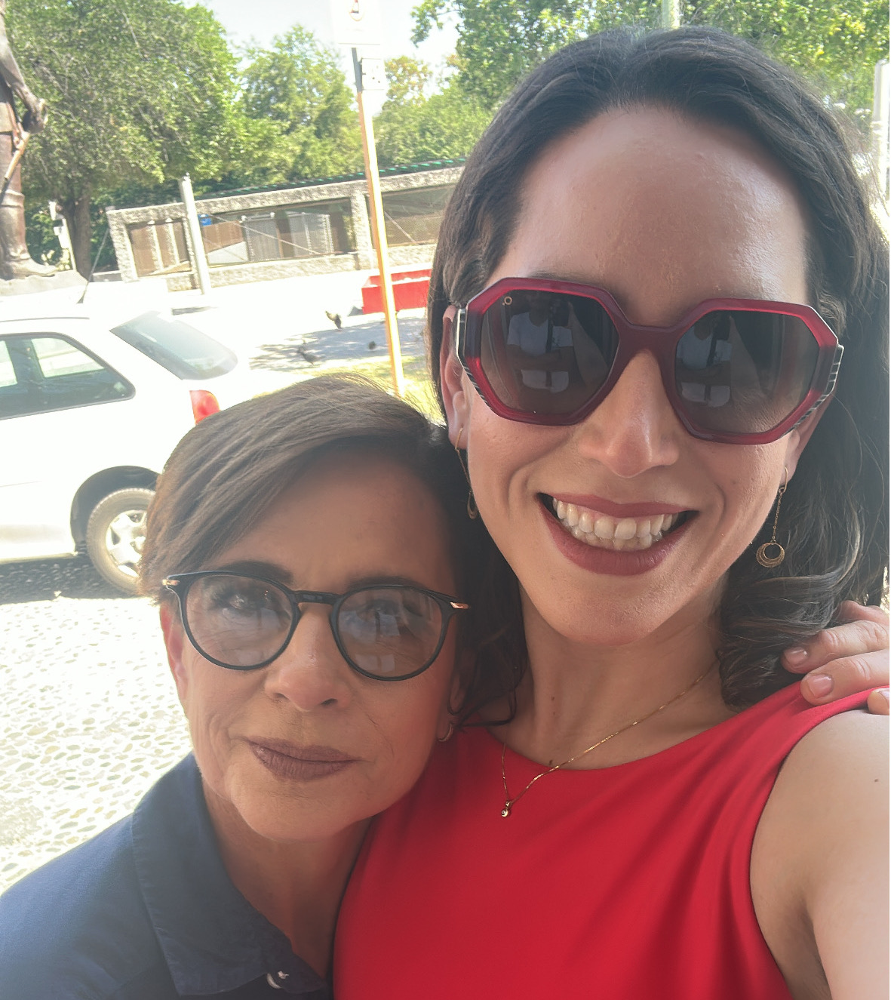
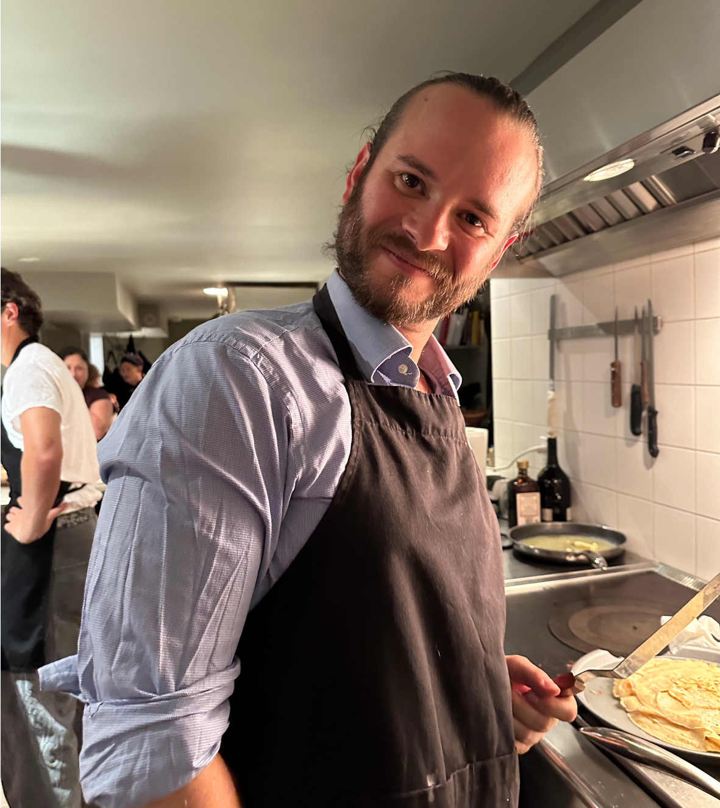
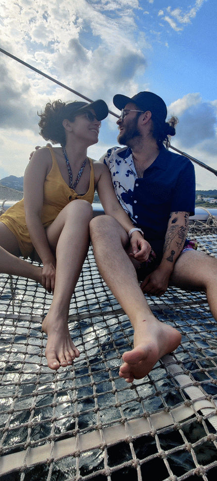
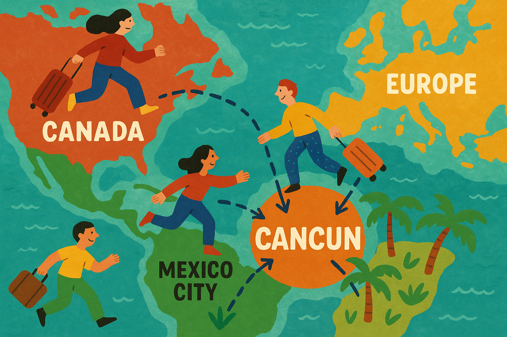
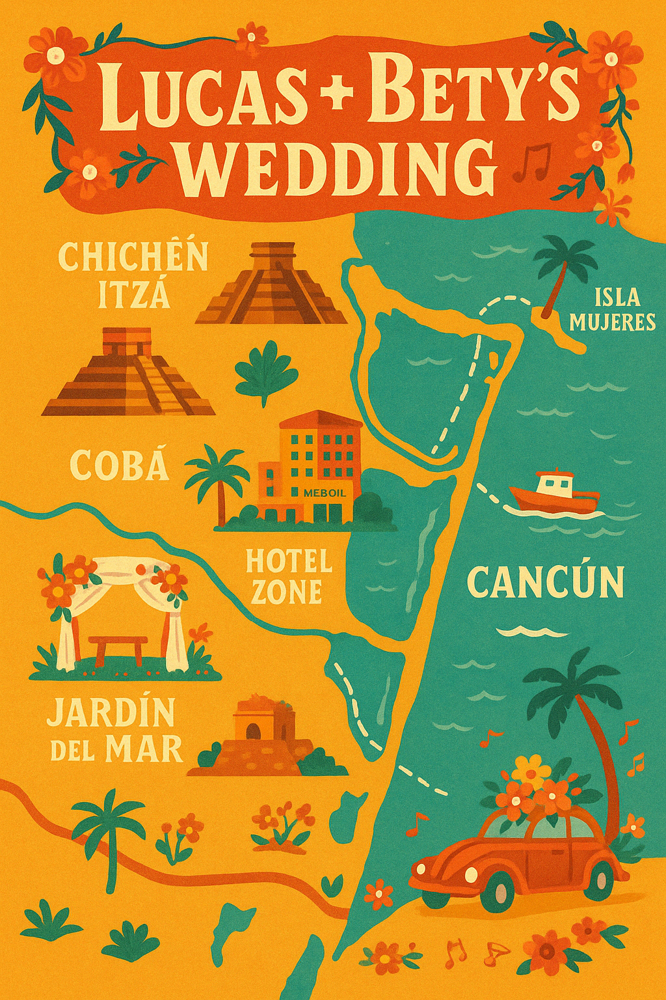

{kind=link}
{kind=link}
{kind=link}
{kind=link}
{kind=link}
{kind=link}
Wednesday
March 4th, 2026
March 4th, 2026
We're arriving! Get settled in at Emporio Cancún for a great start to the
weekend.
From the hospital halls to the rhythm of jazz — Beatriz and Lucas might seem like an unlikely pair, but their story has always danced to its own beat. This wedding (and everything around it) has been a true labour of love - full of laughter, spreadsheets, late-night brainstorms, and a few extremely strong opinions about fonts.

Bety is all heart — joyful, curious, and full of life. She and Lucas met in Toronto, where their story began. Even though she lives far away now, she deeply misses her beloved hometown, Papantla, and cherishes every chance to be - and celebrate - with the people she loves.
With a bright smile, a black coffee (no sugar!) in hand, and a romantic ballad always ready to sing, Bety finds joy in the little things… and loves sharing it with everyone around her.
She knows traveling isn't easy, and that's why she's so grateful for every single person who made the effort to be here. She loves you all deeply. Thank you.

Lucas is a saxophone wizard with a love for late-night jams, mezcal, and just enough chaos to keep things interesting. Equal parts curious and creative, he's always chasing new ideas - whether it's building this website from scratch, planning the perfect playlist, or hosting a PowerPoint party just for fun.
He is also known in some (very small) culinary circles (our kitchen) for his bold Mexican flavours that fill the house with spice and joy - just the way Bety likes it.
Lucas is beyond grateful to be celebrating with the people he and Bety love most. Thank you for being here!

Join us for a magical beachfront celebration at Jardin del Mar in Cancún. We'll exchange vows as the sun sets over the Caribbean, followed by cocktails, mariachi, dinner with live saxophone music, and dancing under the stars.
The evening will culminate with late night tacos - a true Mexican fiesta!

Blvd. Kukulcan Km 13.5, Zona Hotelera
Cancún, Quintana Roo 77500, Mexico
🏨 We'll be staying at Emporio Cancún — our home base for the weekend! 🚐 Transportation to the wedding and 🍹 our Friday icebreaker will happen here. There is a 3 night minimum stay and the rate extends a few days before/after the main event. You're free to stay elsewhere, but we recommend Emporio for the full experience.
🪅🚌🏨
Emporio Cancún
Blvd. Kukulcan Km 17, Zona Hotelera
Cancún, Quintana Roo 77500, Mexico
Room block code: Grupo Bety & Lucas
There are three different ways to reserve your stay at Hotel Emporio:
There is so much to explore in this beautiful Mayan Riviera and these suggestions below are by no means exhaustive.
Take a ferry to Isla Mujeres and enjoy Playa Norte, Punta Sur, snorkeling, and more. It’s a great day trip from Cancún!

Relax on the beautiful sandy beaches of Cancún’s Hotel Zone — Playa Delfines and Playa Chac Mool are guest favorites.
Enjoy a romantic meal overlooking Nichupté Lagoon at restaurants like Thai Lounge or La Destilería.
Visit nearby ruins like El Rey in the Hotel Zone, or plan a day trip to Tulum or Chichén Itzá for a deeper dive into Mayan history.
No! While we would love to have everyone staying together at Emporio Cancun, we completely understand if you'd prefer to stay elsewhere. 🚐 Transportation to and from the wedding venue and Emporio will be provided. If you stay somewhere else, please just be mindful of your own transportation needs.
We love your little ones! 💕 However, the ceremony and reception will be an adults-only event. Emporio Cancun is a family-friendly, all-inclusive resort, and children are more than welcome at the Thursday Icebreaker 🎉. Babysitting services are available at the hotel for an additional fee. You can also contact Kangaroo Babysitting for a recommended local option.
Our ceremony and reception will take place under a palapa—a covered, open-air space by the beach 🌴. We’ll also be dancing under the stars in the sand! ✨ Please dress in Beach Formal Attire—think breathable fabrics, summer suits, cocktail dresses, or elegant beachwear.
Please check your RSVP page to see if a plus one is included with your invitation. If not, and you’d like to bring someone, please reach out to us before confirming.
March is ideal in Cancún with average highs of 82°F (28°C) and lows of 70°F (21°C) 🌴☀️. Evenings can be breezy, so we recommend bringing a light jacket or wrap to stay comfortable at night.
Your presence is the greatest gift we could ask for.
If you would like to give something extra, see below the link to our wedding
registry! ⬇️⬇️
Your presence at our wedding is the greatest gift we could ask for. If you'd like to give us something extra, we’d be grateful for contributions toward experiences on our honeymoon or our upcoming married life together. Since we don’t have much space to store physical gifts just yet, we kindly prefer cash gifts, gift cards, or contributions to our special moments.
It's time! Here are some helpful links. Please share any photos or videos you take at our events with our hashtag #BetyAndLucas or in our album, and if you feel like a challenge, try out one of our favourite games!
¡Llegó el momento! Aquí hay algunos enlaces útiles. Si tomas fotos o videos durante los eventos, compártelos con nuestro hashtag #BetyAndLucas o súbelos a nuestro álbum. Y si te animas, ¡échale un ojo a uno de nuestros juegos favoritos!